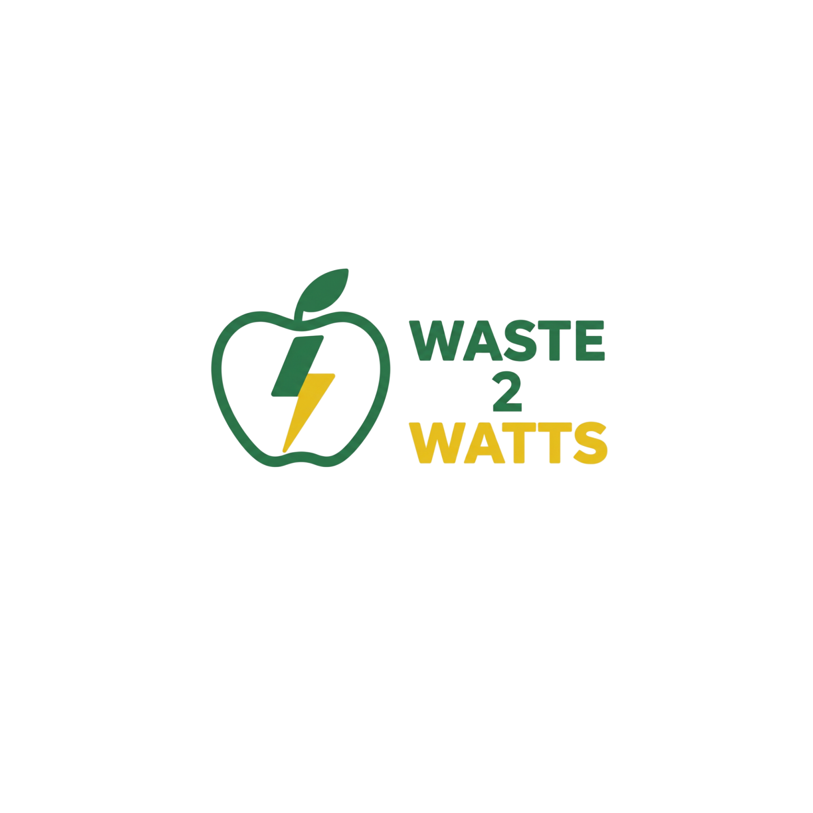

Waste To Watts KW FoodLoop Network2050 Energy Concept — Waterloo Region
Food scraps from homes, schools, and restaurants across KW — converted into biogas and electricity to power the community.
KW Region circular-energy network. Edible food rescued first — unavoidable scraps converted to energy.
The Local Challenge
For over two decades, food waste in KW went straight to landfill — releasing methane with no capture. As the region grows toward 1 million people, the cost of inaction rises.
Food scraps went to landfill. Methane — 28x more potent than CO₂ — released uncontrolled. No tracking, no recovery.
Organics collection launched — scraps converted to compost. Progress, but no energy recovery.
KW wastewater plants already produce 22,200 m³/day of biogas. Food waste still excluded from energy recovery.
KW reaches 1 million residents. More people, more waste — and a bigger opportunity to capture that energy for the community.
How the System Works
Edible food goes to food banks, shelters, and nutrition programs first. Energy comes second.
QR-coded bins at schools, restaurants, apartments, and community centres guide sorting and log each drop-off.
Waste logs identify high-volume areas, reduce truck kilometres, and lower contamination over time.
Anaerobic digestion converts scraps into biogas — electricity, heat, or renewable natural gas. Leftover digestate fertilizes local farms.
Clean energy keeps schools, shelters, and emergency centres running during outages, heat waves, and storms.
Scraps-to-Watts Dashboard
kg diverted by category
kg diverted by source
Your entry updates the dashboard and saves to our shared Google Sheet.
UN Sustainable Development Goals
Our project directly advances four UN Sustainable Development Goals.
Food waste converted to biogas expands clean energy access, including resilience hubs in lower-income neighbourhoods.
Smart bins, optimized routes, and community energy hubs make KW more resilient — especially during emergencies.
Feed people first, then recover energy, then return digestate to soil. A true circular model.
Diverting food waste eliminates uncontrolled methane. Capturing biogas displaces fossil fuels — a direct, measurable climate benefit.
Siemens Energy Hackathon — Judging Criteria
KW residents, food banks, and emergency shelters all benefit. Cleaner air now; a circular food-energy system by 2050.
Anaerobic digestion is proven. KW wastewater plants already produce 13,000–22,200 m³/day of biogas. We expand that infrastructure to include food waste, with QR-logged bins and route-optimized collection.
Edible food goes to people first. Resilience hubs serve underserved neighbourhoods. Multilingual bin guides lower barriers for newcomer communities.
Biogas stores — unlike solar or wind, it's dispatchable. During outages, heat waves, or storms, resilience hubs stay powered for those who need it most.
This site, the QR prototype, and the live dashboard visually demonstrate how the system works and what impact it creates.
Digestion facility: $180M · Biogas grid: $90M · 20 resilience hubs: $110M · Smart bins + trucks: $40M · Platform: $25M · Food rescue & equity: $35M · Contingency: $20M
Mission and About Us
A student-built concept for the 2026 Siemens Energy "Girls with Energy" Hackathon. We designed a 2050 system that collects food waste across KW, converts it to clean energy through anaerobic digestion, and powers the community hubs people need most.
Every kilogram of food waste is a missed opportunity — for energy, equity, and resilience.
5,000 kg/month collected. 1,000 kWh generated for the KW grid. Impact measured transparently with data.
Kitchener-Waterloo Region, Ontario — 600,000+ residents, projected 1 million by 2050.
waste2watts@gmail.com
Scan and Track
Every bin carries a QR code. Scan to open this page, learn what goes in the bin, and log your drop-off. The dashboard updates in real time.
Print this code for your prototype bin — judges can scan it to see the live tracker.
Scan to open this site
Waste To Watts — KW FoodLoop Network
Research Sources